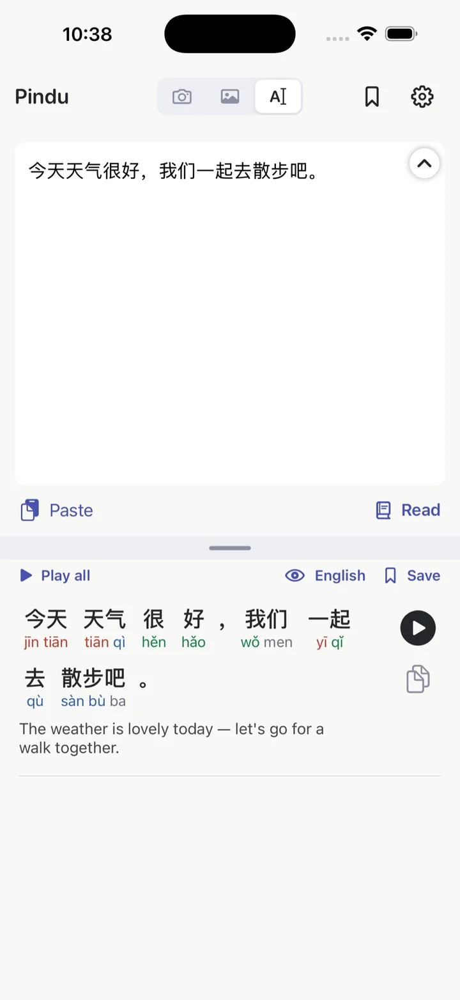

Free
Read what's in front of you.
Point the camera at a menu, a worksheet, or a bulletin. Open a screenshot of a relative's message. Or paste text. All three show the same reading: pinyin above, English below, a play button on every line.
- Reads Simplified and Traditional characters
- Pinch to zoom, up to 5x, with a macro lens button for small print
- Tap the shutter to freeze a page and read at your own pace
